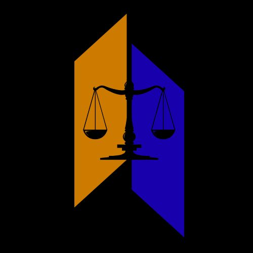

Founder
Membangun komunitas, mengembangkan konten edukasi, melakukan riset hukum, dan membuka ruang diskusi publik.
PROJECT 02 / LEGAL EDUCATION & BLOCKCHAIN
Komunitas edukasi yang berfokus pada hukum, aset digital, blockchain, dan perkembangan regulasi industri kripto.

Membangun komunitas, mengembangkan konten edukasi, melakukan riset hukum, dan membuka ruang diskusi publik.
Legal education, blockchain literacy, crypto regulation, digital economy, dan community development.
Inisiatif ini dikembangkan sebagai ruang belajar dan pertukaran perspektif mengenai perkembangan ekonomi digital.
Website komunitas tersedia untuk informasi lebih lanjut mengenai aktivitas dan materi edukasi.